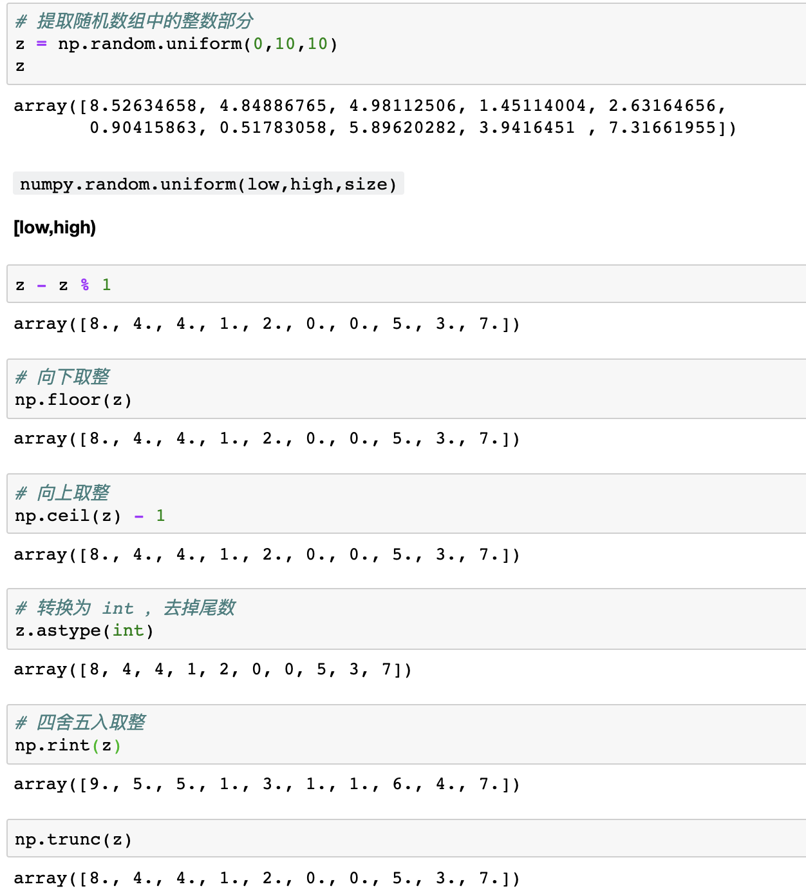

<!DOCTYPE html>
<html>
<head><meta name="generator" content="Hexo 3.8.0">
  <meta charset="utf-8">
  
  <title>Aloha | Gaga酱的奇思妙想</title>
  <meta name="viewport" content="width=device-width, initial-scale=1, maximum-scale=1">
  
    <meta name="keywords" content="萌萌の嘎嘎">
  
  
  
  
  <meta name="description" content="To be, or not to be. It’s a question.">
<meta name="keywords" content="python,Numpy,认真学习の日常">
<meta property="og:type" content="article">
<meta property="og:title" content="磨刀霍霍：Numpy中的取整方法">
<meta property="og:url" content="http://yoursite.com/2019/10/16/磨刀霍霍：Numpy中的取整方法/index.html">
<meta property="og:site_name" content="Gaga酱の奇思妙想">
<meta property="og:description" content="To be, or not to be. It’s a question.">
<meta property="og:locale" content="zh-Hans">
<meta property="og:image" content="http://yoursite.com/2019/10/16/磨刀霍霍：Numpy中的取整方法/1.png">
<meta property="og:updated_time" content="2019-10-16T15:49:43.317Z">
<meta name="twitter:card" content="summary">
<meta name="twitter:title" content="磨刀霍霍：Numpy中的取整方法">
<meta name="twitter:description" content="To be, or not to be. It’s a question.">
<meta name="twitter:image" content="http://yoursite.com/2019/10/16/磨刀霍霍：Numpy中的取整方法/1.png">
  
  <link rel="icon" href="/css/images/favicon.png">
  
    <link href="//fonts.googleapis.com/css?family=Source+Code+Pro" rel="stylesheet" type="text/css">
  
  <link href="https://fonts.googleapis.com/css?family=Open+Sans|Montserrat:700" rel="stylesheet" type="text/css">
  <link href="https://fonts.googleapis.com/css?family=Roboto:400,300,300italic,400italic" rel="stylesheet" type="text/css">
  <link href="//cdn.bootcss.com/font-awesome/4.6.3/css/font-awesome.min.css" rel="stylesheet">
  <style type="text/css">
    @font-face{font-family:futura-pt;src:url(https://use.typekit.net/af/9749f0/00000000000000000001008f/27/l?subset_id=2&fvd=n5) format("woff2");font-weight:500;font-style:normal;}
    @font-face{font-family:futura-pt;src:url(https://use.typekit.net/af/90cf9f/000000000000000000010091/27/l?subset_id=2&fvd=n7) format("woff2");font-weight:500;font-style:normal;}
    @font-face{font-family:futura-pt;src:url(https://use.typekit.net/af/8a5494/000000000000000000013365/27/l?subset_id=2&fvd=n4) format("woff2");font-weight:lighter;font-style:normal;}
    @font-face{font-family:futura-pt;src:url(https://use.typekit.net/af/d337d8/000000000000000000010095/27/l?subset_id=2&fvd=i4) format("woff2");font-weight:400;font-style:italic;}</style>
    
  <link rel="stylesheet" id="athemes-headings-fonts-css" href="//fonts.googleapis.com/css?family=Yanone+Kaffeesatz%3A200%2C300%2C400%2C700&amp;ver=4.6.1" type="text/css" media="all">

  <link rel="stylesheet" id="athemes-headings-fonts-css" href="//fonts.googleapis.com/css?family=Oswald%3A300%2C400%2C700&amp;ver=4.6.1" type="text/css" media="all">
  <link rel="stylesheet" href="/css/style.css">

  <script src="/js/jquery-3.1.1.min.js"></script>

  <!-- Bootstrap core CSS -->
  <link rel="stylesheet" href="/css/bootstrap.css">
  <link rel="stylesheet" href="/css/fashion.css">
  <link rel="stylesheet" href="/css/glyphs.css">
  <!-- Global site tag (gtag.js) - Google Analytics -->
  <script async src="https://www.googletagmanager.com/gtag/js?id=UA-142486934-1"></script>
  <script>
    window.dataLayer = window.dataLayer || [];
    function gtag(){dataLayer.push(arguments);}
    gtag('js', new Date());

    gtag('config', 'UA-142486934-1');
  </script>


</head>
</html>


  <body data-spy="scroll" data-target="#toc" data-offset="50">


  


<header id="allheader" class="site-header" role="banner">
  <div class="clearfix container">
      <div class="site-branding">

          <h3 class="site-title">
            
              <a href="/" title="Gaga酱の奇思妙想" rel="home"> Gaga酱の奇思妙想 </a>
            
          </h3>
          
          
            <div class="site-description">深水静流</div>
          
            
          <nav id="main-navigation" class="main-navigation" role="navigation">
            <a class="nav-open">Menu</a>
            <a class="nav-close">Close</a>

            <div class="clearfix sf-menu">
              <ul id="main-nav" class="menu sf-js-enabled sf-arrows" style="touch-action: pan-y;">
                    
                      <li class="menu-item menu-item-type-custom menu-item-object-custom menu-item-home menu-item-1663"> <a class href="/">冲鸭❤</a> </li>
                    
                      <li class="menu-item menu-item-type-custom menu-item-object-custom menu-item-home menu-item-1663"> <a class href="/archives">archives❤</a> </li>
                    
                      <li class="menu-item menu-item-type-custom menu-item-object-custom menu-item-home menu-item-1663"> <a class href="/categories">碎碎念的基本法❤</a> </li>
                    
                      <li class="menu-item menu-item-type-custom menu-item-object-custom menu-item-home menu-item-1663"> <a class href="/tags">tags❤</a> </li>
                    
                      <li class="menu-item menu-item-type-custom menu-item-object-custom menu-item-home menu-item-1663"> <a class href="/about">岁月如歌❤</a> </li>
                    
                      <li class="menu-item menu-item-type-custom menu-item-object-custom menu-item-home menu-item-1663"> <a class href="/books">阅❤</a> </li>
                    
                      <li class="menu-item menu-item-type-custom menu-item-object-custom menu-item-home menu-item-1663"> <a class href="/movies">影❤</a> </li>
                    
              </ul>
            </div>
          </nav>

      </div>
  </div>
</header>


  <div id="container">
    <div id="wrap">
            
      <div id="content" class="outer">
        
          <section id="main" style="float:none;"><article id="post-磨刀霍霍：Numpy中的取整方法" style="width: 66%; float:left;" class="article article-type-post" itemscope itemprop="blogPost">
  <div id="articleInner" class="clearfix post-1016 post type-post status-publish format-standard has-post-thumbnail hentry category-template-2 category-uncategorized tag-codex tag-edge-case tag-featured-image tag-image tag-template">
    
    
      <header class="article-header">
        
  
    <h1 class="thumb" itemprop="name">
      磨刀霍霍：Numpy中的取整方法
    </h1>
  

      </header>
    
    <div class="article-meta">
      
	<a href="/2019/10/16/磨刀霍霍：Numpy中的取整方法/" class="article-date">
	  <time datetime="2019-10-16T15:07:42.000Z" itemprop="datePublished">October 16, 2019</time>
	</a>

      
	<span class="ico-folder"></span>
    <a class="article-category-link" href="/categories/小李の放学后/">小李の放学后</a>
 
      
    </div>
    <div class="article-entry" itemprop="articleBody">
      
        <h1 id="开始学习"><a href="#开始学习" class="headerlink" title="开始学习~"></a>开始学习~</h1><h2 id="类型-type-不变，数值-value-发生改变"><a href="#类型-type-不变，数值-value-发生改变" class="headerlink" title="类型 type 不变，数值 value 发生改变"></a>类型 <strong>type</strong> 不变，数值 <strong>value</strong> 发生改变</h2><h3 id="运算辅助计算"><a href="#运算辅助计算" class="headerlink" title="% 运算辅助计算"></a><code>%</code> 运算辅助计算</h3><figure class="highlight python"><table><tr><td class="code"><pre><span class="line">z = np.random.uniform(<span class="number">0</span>,<span class="number">10</span>,<span class="number">10</span>)</span><br><span class="line"></span><br><span class="line">z - z % <span class="number">1</span></span><br></pre></td></tr></table></figure>
<h3 id="np-floor-向下取整"><a href="#np-floor-向下取整" class="headerlink" title="np.floor 向下取整"></a><code>np.floor</code> 向下取整</h3><figure class="highlight python"><table><tr><td class="code"><pre><span class="line">np.floor(z)</span><br></pre></td></tr></table></figure>
<h3 id="np-ceil-向上取整"><a href="#np-ceil-向上取整" class="headerlink" title="np.ceil 向上取整"></a><code>np.ceil</code> 向上取整</h3><figure class="highlight python"><table><tr><td class="code"><pre><span class="line">np.ceil(z) - <span class="number">1</span></span><br></pre></td></tr></table></figure>
<h3 id="np-trunc-截取整数部分"><a href="#np-trunc-截取整数部分" class="headerlink" title="np.trunc 截取整数部分"></a><code>np.trunc</code> 截取整数部分</h3><figure class="highlight python"><table><tr><td class="code"><pre><span class="line">np.trunc(z)</span><br></pre></td></tr></table></figure>
<h3 id="np-rint-四舍五入取整"><a href="#np-rint-四舍五入取整" class="headerlink" title="np.rint 四舍五入取整"></a><code>np.rint</code> 四舍五入取整</h3><figure class="highlight python"><table><tr><td class="code"><pre><span class="line">np.rint(z)</span><br></pre></td></tr></table></figure>
<h2 id="类型-type-改变"><a href="#类型-type-改变" class="headerlink" title="类型 type 改变"></a>类型 <strong>type</strong> 改变</h2><h3 id="np-astype-改变数据类型"><a href="#np-astype-改变数据类型" class="headerlink" title="np.astype 改变数据类型"></a><code>np.astype</code> 改变数据类型</h3><figure class="highlight python"><table><tr><td class="code"><pre><span class="line">np.astype(int)</span><br></pre></td></tr></table></figure>
<p></p>
<h1 id="参考资料"><a href="#参考资料" class="headerlink" title="参考资料"></a>参考资料</h1><ol>
<li><a href="https://www.jianshu.com/p/23a9224780e8" target="_blank" rel="noopener">python3.6 numpy 数组的多种取整方式</a></li>
</ol>
      
    </div>
    <footer class="entry-meta entry-footer">
      
	<span class="ico-folder"></span>
    <a class="article-category-link" href="/categories/小李の放学后/">小李の放学后</a>

      
  <span class="ico-tags"></span>
  <ul class="article-tag-list"><li class="article-tag-list-item"><a class="article-tag-list-link" href="/tags/Numpy/">Numpy</a></li><li class="article-tag-list-item"><a class="article-tag-list-link" href="/tags/python/">python</a></li><li class="article-tag-list-item"><a class="article-tag-list-link" href="/tags/认真学习の日常/">认真学习の日常</a></li></ul>

      
        
	<div id="comment">
	
	<!-- 多说评论框 start -->
	 <div class="ds-thread" data-thread-key="/2019/10/16/磨刀霍霍：Numpy中的取整方法/" data-title="磨刀霍霍：Numpy中的取整方法" data-url="http://yoursite.com/2019/10/16/磨刀霍霍：Numpy中的取整方法/"></div>
	<!-- 多说评论框 end -->
	<!-- 多说公共JS代码 start (一个网页只需插入一次) -->
	<script type="text/javascript">
	var duoshuoQuery = {short_name:"iTimeTraveler"};
	  (function() {
	    var ds = document.createElement('script');
	    ds.type = 'text/javascript';ds.async = true;
	    ds.src = (document.location.protocol == 'https:' ? 'https:' : 'http:') + '//static.duoshuo.com/embed.js';
	    ds.charset = 'UTF-8';
	    (document.getElementsByTagName('head')[0] 
	     || document.getElementsByTagName('body')[0]).appendChild(ds);
	  })();
	  </script>
	<!-- 多说公共JS代码 end -->
	
	</div>
	<link rel="stylesheet" href="/css/comment.css">


      
    </footer>
    <hr class="entry-footer-hr">
  </div>
  
    
<nav id="article-nav">
  
    <a href="/2019/10/27/Y想-191027/" id="article-nav-newer" class="article-nav-link-wrap">
      <strong class="article-nav-caption">Newer</strong>
      <div class="article-nav-title">
        
          Y想-191027
        
      </div>
    </a>
  
  
    <a href="/2019/10/11/磨刀霍霍：Numpy中的bincount/" id="article-nav-older" class="article-nav-link-wrap">
      <strong class="article-nav-caption">Older</strong>
      <div class="article-nav-title">磨刀霍霍：Numpy中的bincount</div>
    </a>
  
</nav>

  
</article>


<!-- Table of Contents -->

  <aside id="sidebar">
    <div id="toc" class="toc-article">
    <strong class="toc-title">Contents</strong>
    
      <ol class="nav"><li class="nav-item nav-level-1"><a class="nav-link" href="#开始学习"><span class="nav-number">1.</span> <span class="nav-text">开始学习~</span></a><ol class="nav-child"><li class="nav-item nav-level-2"><a class="nav-link" href="#类型-type-不变，数值-value-发生改变"><span class="nav-number">1.1.</span> <span class="nav-text">类型 type 不变，数值 value 发生改变</span></a><ol class="nav-child"><li class="nav-item nav-level-3"><a class="nav-link" href="#运算辅助计算"><span class="nav-number">1.1.1.</span> <span class="nav-text">% 运算辅助计算</span></a></li><li class="nav-item nav-level-3"><a class="nav-link" href="#np-floor-向下取整"><span class="nav-number">1.1.2.</span> <span class="nav-text">np.floor 向下取整</span></a></li><li class="nav-item nav-level-3"><a class="nav-link" href="#np-ceil-向上取整"><span class="nav-number">1.1.3.</span> <span class="nav-text">np.ceil 向上取整</span></a></li><li class="nav-item nav-level-3"><a class="nav-link" href="#np-trunc-截取整数部分"><span class="nav-number">1.1.4.</span> <span class="nav-text">np.trunc 截取整数部分</span></a></li><li class="nav-item nav-level-3"><a class="nav-link" href="#np-rint-四舍五入取整"><span class="nav-number">1.1.5.</span> <span class="nav-text">np.rint 四舍五入取整</span></a></li></ol></li><li class="nav-item nav-level-2"><a class="nav-link" href="#类型-type-改变"><span class="nav-number">1.2.</span> <span class="nav-text">类型 type 改变</span></a><ol class="nav-child"><li class="nav-item nav-level-3"><a class="nav-link" href="#np-astype-改变数据类型"><span class="nav-number">1.2.1.</span> <span class="nav-text">np.astype 改变数据类型</span></a></li></ol></li></ol></li><li class="nav-item nav-level-1"><a class="nav-link" href="#参考资料"><span class="nav-number">2.</span> <span class="nav-text">参考资料</span></a></li></ol>
    
    </div>
  </aside>


</section>
        
      </div>

    </div>
    <!-- <nav id="mobile-nav">
  
    <a href="/" class="mobile-nav-link">冲鸭❤</a>
  
    <a href="/archives" class="mobile-nav-link">archives❤</a>
  
    <a href="/categories" class="mobile-nav-link">碎碎念的基本法❤</a>
  
    <a href="/tags" class="mobile-nav-link">Tags❤</a>
  
    <a href="/about" class="mobile-nav-link">岁月如歌❤</a>
  
    <a href="/books" class="mobile-nav-link">阅❤</a>
  
    <a href="/movies" class="mobile-nav-link">影❤</a>
  
</nav> -->
    <footer id="footer" class="site-footer">
  

  <div class="clearfix container">
      <div class="site-info">
	      &copy; 2022 Gaga酱の奇思妙想 All Rights Reserved.
        
      </div>
      <div class="site-credit">
        Theme by <a href="https://github.com/iTimeTraveler/hexo-theme-hipaper" target="_blank">hipaper</a>
      </div>
  </div>
</footer>


<!-- min height -->

<script>
    var wrapdiv = document.getElementById("wrap");
    var contentdiv = document.getElementById("content");

    wrapdiv.style.minHeight = document.body.offsetHeight - document.getElementById("allheader").offsetHeight - document.getElementById("footer").offsetHeight + "px";
    contentdiv.style.minHeight = document.body.offsetHeight - document.getElementById("allheader").offsetHeight - document.getElementById("footer").offsetHeight + "px";


    <!-- headerblur min height -->
    
    
</script>
    
<div style="display: none;">
  <script src="https://s11.cnzz.com/z_stat.php?id=1260716016&web_id=1260716016" language="JavaScript"></script>
</div>

<!-- mathjax config similar to math.stackexchange -->

<script type="text/x-mathjax-config">
  MathJax.Hub.Config({
    tex2jax: {
      inlineMath: [ ['$','$'], ["\\(","\\)"] ],
      processEscapes: true
    }
  });
</script>

<script type="text/x-mathjax-config">
    MathJax.Hub.Config({
      tex2jax: {
        skipTags: ['script', 'noscript', 'style', 'textarea', 'pre', 'code']
      }
    });
</script>

<script type="text/x-mathjax-config">
    MathJax.Hub.Queue(function() {
        var all = MathJax.Hub.getAllJax(), i;
        for(i=0; i < all.length; i += 1) {
            all[i].SourceElement().parentNode.className += ' has-jax';
        }
    });
</script>

<script type="text/javascript" src="https://cdn.mathjax.org/mathjax/latest/MathJax.js?config=TeX-AMS-MML_HTMLorMML">
</script>


  <link rel="stylesheet" href="/fancybox/jquery.fancybox.css">
  <script src="/fancybox/jquery.fancybox.pack.js"></script>


<script src="/js/script.js"></script>
<script src="/js/bootstrap.js"></script>
<script src="/js/main.js"></script>


  <script type="text/javascript" src="js/love.js"></script>
  <script type="text/javascript" src="js/float.js"></script>
  <script type="text/javascript" src="js/typewriter.js"></script>
  <script type="text/javascript" color="0,104,183" opacity="1" zindex="-1" count="50" src="js/particle.js"></script>
  </div>

  <a id="rocket" href="#top" class=""></a>
  <script type="text/javascript" src="/js/totop.js" async=""></script>
</body>
</html>
